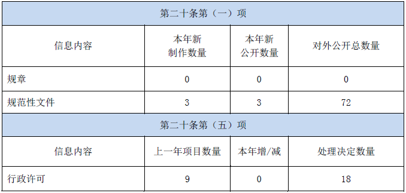
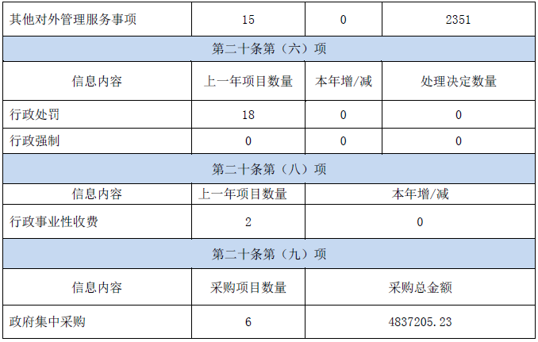
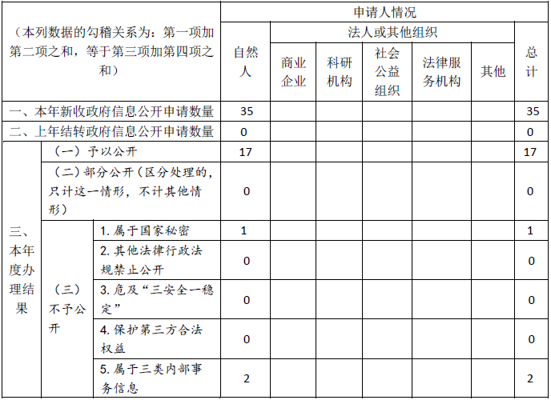
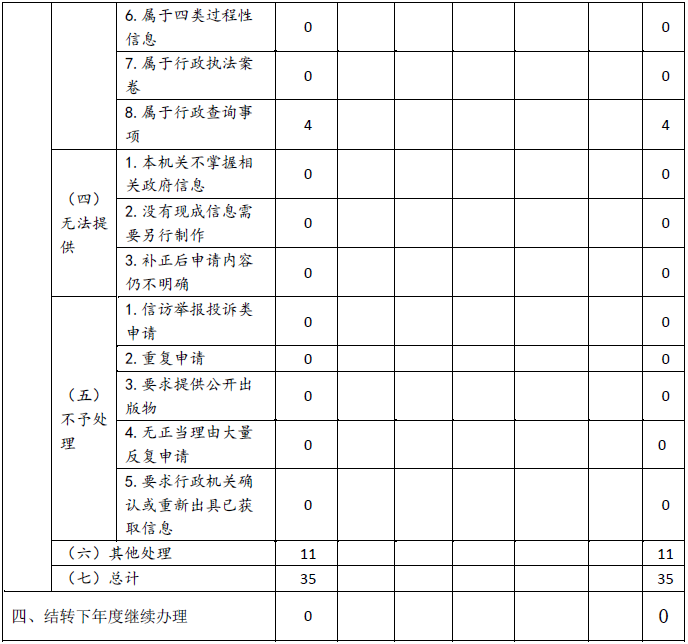
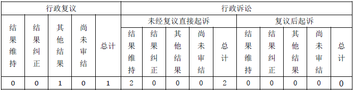

四川省教育厅科学技术处-四川省教育服务公共平台网站
四川省教育厅科学技术处-四川省教育服务公共平台网站
四川省教育厅科学技术处-四川省教育服务公共平台网站
四川省教育厅科学技术处-四川省教育服务公共平台网站
四川省教育厅科学技术处-四川省教育服务公共平台网站2019年度政府信息公开工作报告
（2020年1月17日）
本年报根据《中华人民共和国政府信息公开条例》（国务院令第711号）要求，由四川省教育厅科学技术处-四川省教育服务公共平台网站编制。报告内容包括：信息公开总体情况、政府信息主动公开情况、收到和处理政府信息公开申请情况、政府信息公开行政复议、行政诉讼情况、存在的主要问题和改进措施情况。本年报所列数据的统计期限自2019年1月1日起至12月31日止，年报电子版可以从四川省教育厅科学技术处-四川省教育服务公共平台网站政府信息公开平台（www.scedu.net）上下载。如对报告有任何疑问，请联系四川省教育厅科学技术处-四川省教育服务公共平台网站政策法规综合改革处（行政审批处）（联系电话：028-86117428 传真：028-86110612 邮编： 地址：成都市青羊区陕西街26号）。
一、政府信息公开总体情况
2019年，我厅深入贯彻习近平新时代中国特色社会主义思想和党的十九大、十九届四中全会精神，深入贯彻落实《中华人民共和国政府信息公开条例》（国务院令711号）、国务院办公厅《关于印发2019年政务公开工作要点的通知》（国办发〔2019〕14号）、四川省人民政府办公厅《关于印发四川省2019年政务公开工作要点的通知》（川办发〔2019〕32号）的要求，坚持以公开为常态、不公开为例外，大力推进决策、执行、管理、服务和结果公开。针对公众关切，主动、及时、全面、准确地公开政府信息。不断扩大公开范围，细化公开内容，拓展公开渠道。
截止2019年12月31日，我厅在“四川教育网”和四川省电子政府信息外网门户网站等其他公开载体全年公开各类信息10400条，其中：政府网站公开政府信息4000条，政务微博公开政府信息5100条，政务微信公开政府信息1300条。
（一）强化制度保障，进一步推进信息公开落实。切实加强教育信息公开力度，将“以公开为常态，不公开为例外”的要求贯彻到权力运行全流程、政务服务全过程，大力推进决策、执行、管理、服务和结果公开，针对公众关切，主动、及时、全面、准确地公开政府信息。深入推进本级政府信息公开，加强信息发布、解读和回应，依法依规答复群众提出的信息公开申请。在日常公文流转中的不涉及国家秘密、商业秘密、公民个人隐私，不危及国家安全、公共安全、经济安全和社会稳定的政府信息均主动公开。对于涉及公民、法人或者其他组织切身利益的，需要社会公众广泛知晓或参与的政府信息，采取网络、报刊、微博、微信等多种手段公开，切实提高政府信息公开效果。制发2019年度信息公开工作计划，完善省教育厅信息公开目录并在网上公开发布，及时发布信息公开年度工作报告，提升教育厅政务公开制度化、标准化、信息化水平。指导省管高校做好信息公开工作，各校均及时在网上发布2019年度信息公开工作报告。
（二）优化网站建设，保障信息公开。一是强化政府网站是政府信息公开第一平台的作用，梳理、整合建设相关栏目设置，信息公开模块共建设栏目18个，包含教育厅机构信息、人事信息、政策法规、统计规划、行政权力、民生工程、阳光招生等各类政府信息。二是充分利用网络及时性这一特点，及时发布我厅的一些重要文件和事关民生的重要政务活动信息，全年累计发布政策文件2400余篇，教育厅重大工作、重要活动75篇，其访问量达4万人次。三是围绕公众关注的教育热点、教育民生等重点问题开设专题专栏，深入、持续和权威地进行信息公开，全年共新建“不忘初心、牢记使命”主题教育等12个专题专栏。
（三）推进教育领域重大决策信息公开。充分发挥四川省教育厅科学技术处-四川省教育服务公共平台网站咨询专家团和律师顾问团的作用，坚持教育重大决策专家咨询制度，提高决策科学化；涉及群众切身利益或社会高度关注的重大政策措施，通过调查研究、咨询座谈等方式，广泛听取市（州）教育行政部门、学校、专家学者等各方意见，提高了决策过程的透明度。今年在广泛征求公众意见的基础上，制定并印发《四川省学前教育深化改革规范发展实施方案》《四川省规范校外线上培训的实施方案》等文件，起草《四川教育现代化2035》《加快推进教育现代化建设教育强省办好人民满意教育的实施方案》《关于加快推进孔子学院改革发展的实施方案》《关于改进职称管理服务方式推进高等学校职称评审制度改革的意见》《关于切实减轻中小学生课外负担开展校外培训机构专项治理行动的通知》《四川省加强中小学生欺凌综合治理实施方案》等文件。
（四）政府信息公开与政务审批服务相结合，优化营商环境。一是动态调整权责清单。按照《四川省政府办公厅关于印发〈四川省权责清单动态调整管理办法〉的通知》（川办发〔2016〕35号）等文件要求，我厅对行政权力事项进行了动态调整，新增行政确认事项“对普通高等学校学生跨省转学的确认”，在教育厅官网上进行了公布，同步完成了责任清单制作，并录入四川一体化政务服务平台，在平台上运行办件。依法取消“对普通高等学校学生转学的确认”“大学英语二、三级考试报名”“四川省中等职业学校毕业证书认证及毕业证明书补办”等3项行政审批事项。为更好体现权责法定、权责统一原则，方便群众办事，对公共服务事项中的“省内高校毕业生就业报到证办理”“高等教育学历证书认证”“教师资格证相关政策咨询”“中小学教师职称评聘政策咨询”“学校办学基本情况咨询”等5个子项进行了细化拆分，提升了服务的针对性和实效性。二是扎实推进“一网通办”。持续规范行政权力和公共服务事项在四川一体化政务服务平台运行，受理行政许可事项18件，办结18件；受理公共服务事项2351件，办结2351件；办结四川省“12345”政务服务热线905件，有效提升“互联网+政务服务”水平，提高群众满意度。按照省政府统一部署，核查《国家级政务服务事项基本目录》事项64项。
（五）推进财政资金信息公开。按照省财政厅制定的《省级部门预决算公开工作规程》（试行）规定的内容、格式，在2019年预算和2018年度决算批复后20个工作日内，将“2019年预算”和“2018年度决算情况”予以公示公告，公开信息中包含所属预算单位的预决算信息。基本支出和项目支出全部公开到项级科目，一般公共预算财政拨款基本支出公开到款级科目。公开“三公”经费决算，包括因公出国（境）团组数及人数，公务用车购置数及保有量，国内公务接待的批次、人数，以及“三公”经费增减变化原因等信息。在教育厅网站及时公开政府采购项目信息，实现了采购预算、流程及结果的全过程信息公开。
（六）继续推进高考招生信息公开。一是实施信息“十公开”。制定信息公开公示办法，细化明确信息公开公示的内容、主体、时间和渠道，完善多级信息公示公开的制度措施，主动及时通过门户网站、微博微信、新闻媒体等多形式多渠道及时公开招生政策、录取程序、录取结果等信息，将“十公开”要求落到实处。二是加强考生资格审查和公示。积极推动和实施由教育、公安、民委、统计和招考等部门协同配合的考生报考资格审查把关工作机制，对保送生、自主招生等特殊类型招生和享受照顾政策考生，一律在规定时段、规定范围、规定渠道公示。未经公示的考生，一律不得享受相关政策。初步统计，2019年共公示考生68.5万人次，其中普通高考54.2万人次，成人高考14.3万人次。三是拓展信息公开渠道。主动及时通过门户网站、微信平台、咨询电话、每日通稿、科教频道高考360专栏等多种渠道，深入细致解读招生政策办法，发布录取工作动态情况，解惑释疑。全省设立了教育厅官方网站、政务微信、政务微博，考试院官方网站、政务微信、手机客户端“考生助手”APP，四川电信IPTV等多种免费查询渠道，考生可使用互联网和任一手机号卡免费查询普通高考成绩和录取信息。
（七）拓宽政民互动渠道，提升为民服务水平。一是完善功能栏目设置，根据分析不同受众的需求，开设厅长信箱、新闻发布、在线访谈、意见征集、问卷调查等栏目。二是强化互动质量，建立以教育厅各处室（单位）业务骨干为成员的联络员队伍，负责提供、办理相关事项；以“不忘初心、牢记使命”主题教育为切入点，安排专人负责厅长信箱信件办理，提高群众满意度，按程序交办、回复，每月对外通报回复公众信息数量，全年共计办理信件1500余件。做到事事有回应、件件有落实，极大提升为民服务水平。三是梳理群众关心的热点难点问题，建设“问答精选”栏目，对广大群众关注度高的咨询问题进行梳理发布，使公众可以快速了解相关政策规定，全年共梳理问题52个，浏览量达1万余人次。四是今年在评卷和录取期间设立了“媒体开放日”，接受媒体记者现场采访报道。邀请部分人大代表政协委员，考生、家长、市民代表等进评卷场和录取场实地参观监督，提高人民群众对招生工作的满意度。
（八）认真办理议案提案回复。贯彻落实《国务院办公厅关于做好全国人大代表建议和全国政协委员提案办理结果公开工作的通知》（国办发〔2014〕46号），对建议提案办理结果公开工作明确了公开方式、涉密处理、属性标注等工作程序。牵头办理人大建议103件（主办58件，协办45件）、政协提案155件（主办90件，协办65件），已全部办结。办理工作严格按照《四川省人民政府办理人大代表建议和政协提案办法》要求，从强化组织领导、强化沟通协调、强化借鉴吸收等方面下功夫，努力加强和改进办理工作，实现办复率、满意率两个100%，并在门户网站建议提案公开专栏分批次公开了建议。
二、主动公开政府信息情况


三、收到和处理政府信息公开申请情况


四、政府信息公开行政复议、行政诉讼情况

五、存在的主要问题及改进情况
省教育厅在教育信息公开工作中取得了新的突破，但还存在一些问题。教育领域政府信息公开标准化规范化建设有待进一步推进，信息公开平台整合信息资源的能力还有待进一步强化。下一步，重点做好两个方面工作：一是进一步深入推进信息公开制度建设，强化考核监督，进一步推进教育领域政府信息公开标准化规范化建设，加强对全省高校信息公开工作的督查力度，不断完善效果评估机制，积引导高校不断改进信息公开工作。二是进一步加强平台建设，提升信息资源整合能力。通过推进教育信息化建设和“互联网+政务服务”，实现最大范围的数据共享，提升信息公开的能力和为公众服务的水平。
六、其他需要报告的事项
无